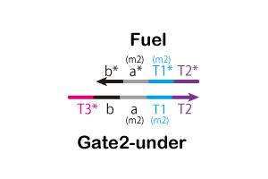
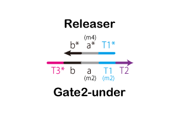
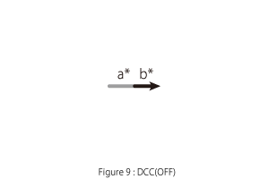
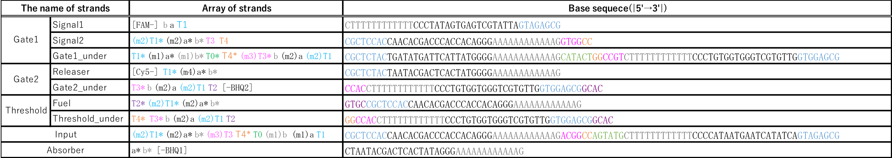

Page Overview
Confirmation ATP Controller action in vitro
T7 promotor sequence variation
実験概要
T7 RNA polymeraseは、T7promotor配列を認識し、下流の配列のコピーとなるRNAをバッファー中のATPを用いて合成するが、
今回の実験では、ミスマッチ塩基対を用いることで、T7promotorが認識しないように設計されている。
そこで、ミスマッチを含むT7promotorを,T7 RNA polymeraseを持つ大腸菌内に投入し、polymeraseが配列を認識するかどうかを実験する。
実験方法
プラスミドと呼ばれる環状DNAを用いて、大腸菌内で実験を行う。
プラスミド内の配列中にミスマッチを含むT7promotor配列を組み込み、その下流の配列で、
GFPと呼ばれる、緑色蛍光タンパク質を作るようなRNAを生成する配列を組み込んだプラスミドを設計する。
これを大腸菌内に投入し、GFPが生成されて蛍光が見られるかどうかを観察する。
実験内容
①変異ありプラスミドの生成
まず、T7promotor配列の端の1箇所を変更したミスマッチ配列を設計した。
端の1箇所にしたのは、本来の2本鎖DNAから、結合力を弱めすぎないようにするためである。
次に、設計したDNA配列を含むプラスミドを抽出する。PCR法を用いて、大腸菌に増殖させる。
・水・PCRに必要な素材・dNTPs・プライマー・テンプレート・KODFXNEO以上を合計50μmになるように混ぜ、3時間待つことで、変異ありのプラスミドを合成する。
その後、溶液内には変異ありと変異なしのプラスミドが存在するため、元あった変異なしのプラスミドをDPN（酵素）を用いて分解する。
・DPN（1μm）・TBufferX10(1μm)・溶液（8μm）溶液内を変異ありプラスミドのみにしたのちに、大腸菌内に導入し、プラスミドを増やす。
この際用いる大腸菌は、DHSrと呼ばれるもので、T7RNApolymeraseはなく、プラスミドの量を増やすために用いる。
氷上でコンピテント・セルにプラスミドを入れ、30分静置する。30秒インキュベーションし、37°Cで1時間待つ。
溶液をシャーレ上の培地に移し、一晩待つ。MiniPrep（と呼ばれるキット）を用いて、大腸菌からプラスミドのみを取り出し、抽出量を計測する。
その後、シーケンシングし、変異が入っているかを確認した。
②変異ありプラスミドの反応
の確認次に、取り出した変異ありプラスミドを、T7 RNA polymeraseを持つ大腸菌BL21（DE3）に導入する。
①と同様にして変異ありプラスミドを大腸菌に導入、1日培養したのちにGFPによる蛍光を確認した。
実験結果
①による変異ありプラスミドの生成は問題なく成功した。②での大腸菌への導入も成功し、以下のような結果が得られた。
これからは、蛍光が確認することができ、変異ありのT7promotor配列もpolymeraseが認識していることがわかる。
考察
以上の結果から、配列の端の一箇所を変えた時、polymeraseはこの配列を認識してしまうことがわかった。 そのため、このミスマッチ塩基配列よりも、変異数を増やす必要があると思われる。 また、今回は配列の端に変異を入れたが、変異を入れる場所によっても差が出ると考えられる。 この部分は要検証であり、最終的には、polymeraseが配列を認識しない、最低限のミスマッチ量を模索していく必要がある。 また、polymeraseが配列を認識することが、変異が増えるごとに徐々に認識するpolymerase量が減少するのか、 一定の変異を加えた時に、一気に認識量が減少するのかはまだ解明されていない。
Experiment in vivo
実験概要
DPgate bridgeを大腸菌内に導入し、うまくATPが吸収されるかどうかをみる。 また、タイマーの作用によって、反応が時間差で終了するのかどうかを観察し、DNA回路がうまく作動しているのかどうかを確認する。
実験方法
大腸菌(BL21(DE3))にエレクトロポレーション法等で導入する。 エレクトロポレーション法とは、細胞に電気パルスで細胞膜に微小な穴を開け、その穴にDNAを送り込むという方法である。 他の方法でもDNAを細胞内に送り込むことはできると思われる。その後細胞内のATP量の時間変化を測ることで回路の動きを把握する。
問題点
問題点としては、DNA回路が実際に動くのかどうかが不明である。 大腸菌は時間とともに分裂するため、細胞内の回路の量が減っていってしまう。 プラスミドの場合、大腸菌の分裂の際に、プラスミドも同時に分裂するような機能が搭載されているが、DNA回路にも同様な機能が加えられるかが問題である。 解決策の一つとしては、大腸菌はある温度で増殖の速度が遅くなるため、その温度に保つことで、細胞内の希釈による影響を抑えることができると思われる。
Material & Methods
Simulation conditions
We set the binding rate constant (kf) based on toehold length as follows.
If toehold_length ≤ 6
kf = 5.0×10n-1[M-1s-1]
else
kf = 3.0×106[M-1s-1]
Where
n : toehold_length
Type of Strands
We designed the strands shown in Figures 5~9.
{kind=link}
{kind=link}
  
{kind=link}
{kind=link}
.gif){kind=link}
Additionally, we designed DNA sequences using NUPACK.
The DNA sequences are shown in Table 1.
NUPACK is able to design DNA sequences and evaluate their secondary structures at a room temperature.

{kind=link}